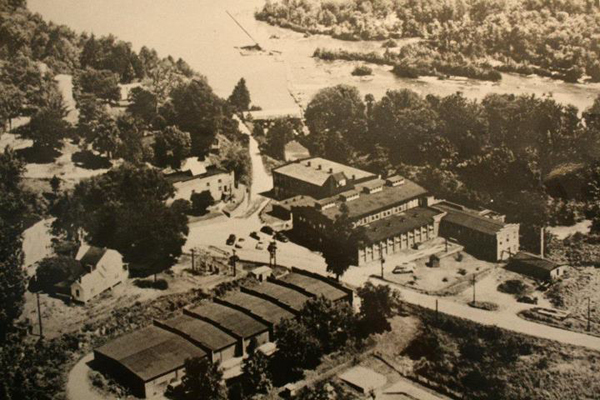
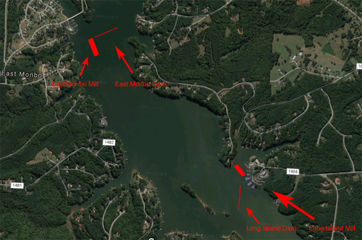
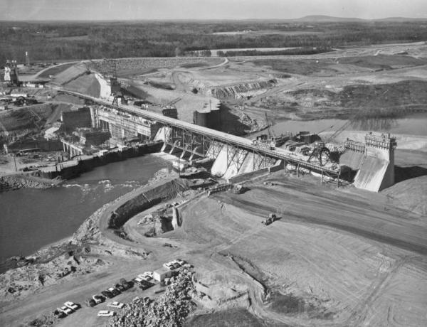

Long Island Mill and Village
When Lake Norman was created in the 1950s, several historical sites were submerged, including the Long Island Mill and Village. Built in the 1800s, the mill was one of the earliest cotton mills in the American South.
Operated by Superior Yarn Mills, it was a bustling site until it closed in 1959 due to the flooding caused by Duke Power's creation of the lake. At its height, the Long Island Mill housed over 4,000 spindles and provided homes and community spaces for about 120 workers and their families.
A Submerged Past
Many buildings, roads, and even graveyards from the village remain submerged beneath the lake today, a silent reminder of North Carolina's industrial past.
| Submerged Structure | Original Purpose |
|---|---|
| Long Island Mill | Cotton production |
| Worker houses | Residential |
| Roads | Transportation |
| Graveyards | Burial grounds |
The Duke Power Dam: Birth of Lake Norman
The creation of Lake Norman, which led to the submersion of these historic towns, was a result of the ambitious Cowan's Ford Dam project undertaken by Duke Power Company (now Duke Energy). The dam was built on the Catawba River as part of a larger hydroelectric project to meet the growing energy needs of the region.
Key Facts about the Dam and Lake Norman:
- Construction began in 1959 and was completed in 1963.
- The dam is 130 feet high and 1,279 feet long.
- Lake Norman covers an area of 32,510 acres, with 520 miles of shoreline.
- It's the largest man-made body of fresh water in North Carolina.
- The lake was named after Norman Atwater Cocke, former president of Duke Power.
While the dam brought significant benefits in terms of power generation and water supply, it came at the cost of submerging several communities and altering the landscape forever. The flooded towns of Long Island and East Monbo became the "ghost towns" that now lie beneath the surface of Lake Norman, their stories preserved in local history and the memories of those who once called these places home.